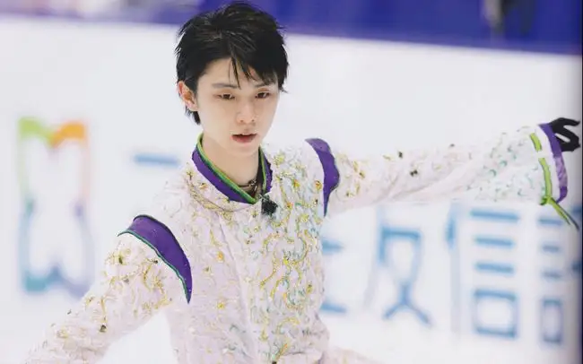

<!DOCTYPE html>
<html lang="en">
<head>
    <meta charset="UTF-8">
    <meta http-equiv="X-UA-Compatible" content="IE=edge">
    <meta name="viewport" content="width=device-width, initial-scale=1.0">
    <title>Document</title>
</head>
<body>
    <!-- <br> -->
    <canvas id="tutorial" width="300" height="300" style="border:1px solid red;">

    </canvas>
</body>
<script type="text/javascript">
    /*
    一.矩形绘制
        1.绘制一个填充的矩形 fillRect(x, y, width, height)
        2.绘制一个填充的矩形 strokeRect(x, y, width, height)
        3.清除指定的矩形区域，然后这块区域会变的完全透明。clearRect(x, y, widh, height)
    二.绘制路径
            图形的基本元素是路径。路径是通过不同颜色和宽度的线段或曲线相连形成的不同形状的点的集合。
            1.beginPath() 新建一条路径，路径一旦创建成功，图形绘制命令被指向到路径上生成路径
            2.moveTo(x, y)把画笔移动到指定的坐标(x, y)。相当于设置路径的起始点坐标。
            3.lineTo(x,y) 定义线条结束坐标
            4.closePath()闭合路径之后，图形绘制命令又重新指向到上下文中
            5.stroke()通过线条来绘制图形轮廓
            6.fill()通过填充路径的内容区域生成实心的图形
    三.绘制图形
        1.arc(x, y, r, startAngle, endAngle, anticlockwise):以(x, y)为圆心，以r为半径，
        从 startAngle弧度开始到endAngle弧度结束。anticlosewise是布尔值，true表示逆时针，false表示顺时针。(默认是顺时针)
        2.arcTo(x1, y1, x2, y2, radius):根据给定的控制点和半径画一段圆弧，最后再以直线连接两个控制点
    四.颜色设置
        设置图形的填充颜色 fillStyle = color
        设置图形轮廓的颜色 strokeStyle = color
        rgba() 函数使用红(R)、绿(G)、蓝(B)、透明度(A)
    五. 1.line Style 线宽。只能是正值。默认是1.0。起始点和终点的连线为中心，上下各占线宽的一半
        2.lineWidth = value 线宽
        3.lineCap = type 线条末端样式 
        butt：线段末端以方形结束  round：线段末端以圆形结束  square：线段末端以方形结束，
        但是增加了一个宽度和线段相同，高度是线段厚度一半的矩形区域。
        4.lineJoin = type  同一个path内，设定线条与线条间接合处的样式
            1.round  通过填充一个额外的，圆心在相连部分末端的扇形，绘制拐角的形状。 圆角的半径是线段的宽度。
            2.bevel  在相连部分的末端填充一个额外的以三角形为底的区域， 每个部分都有各自独立的矩形拐角。
            3.miter 通过延伸相连部分的外边缘，使其相交于一点，形成一个额外的菱形区域。

    六.虚线 1.setLineDash([实线长度, 间隙长度]) 
            （1）数组中元素个数是奇数的话，数组会默认把组内元素复制一份。
            （2）数组中下标是奇数的元素是虚线小段的尺寸，下标是偶数的元素则是虚线小段之间的间距
            “lineDash:[6]” === “lineDash:[6,6]” //释义第一个"6"是虚线小段的长度，第二个"6"是虚线的间隔
            “lineDash:[1,2,3,4]” // 释义 "1"是第一段虚线长度
    七.绘制文本
        fillText(text, x, y [, maxWidth])在指定的(x,y)位置填充指定的文本，绘制的最大宽度是可选的.
        strokeText(text, x, y [, maxWidth]) 在指定的(x,y)位置绘制文本边框，绘制的最大宽度是可选的.
        ctx.fillStyle = 'RGB(21,253,255)';//设置文本颜色
        文本居中显示
        ctx.textAlign = "center";//水平居中：设置 ctx.textAlign = "center"；x = 画布宽度的一半
        ctx.textBaseline = "middle";//垂直居中：设置 ctx.textBaseline = "middle"；y = 画布高度的一半。
    八.绘制图片  创建图片 var img = new Image();  
                ctx.drawImage(img,0,0); //参数1：要绘制的img  参数2、3：绘制的img在canvas中的坐标
            缩放图片
            drawImage(image, x, y, width, height)
            切片(slice) drawImage(image, sx, sy, sWidth, sHeight, dx, dy, dWidth, dHeight)  
            前4个是定义图像源的切片位置和大小，
            后4个则是定义切片的目标显示位置和大小。
    九.状态的保存和恢复
        save()和restore()
        save:Canvas状态存储在栈中，每当save()方法被调用后，当前的状态就被推送到栈中保存。一个绘画状态包括：
        retore:每一次调用 restore 方法，上一个保存的状态就从栈中弹出，所有设定都恢复。(类似数组的pop())

    十.变形 translate  translate(x, y)用来移动 canvas 的原点到指定的位置
            rotate(angle)  这个方法只接受一个参数：旋转的角度(angle)，它是顺时针方向的，以弧度为单位的值。
            scale  scale(x, y)  我们用它来增减图形在 canvas 中的像素数目，对形状，位图进行缩小或者放大。
            transform(a, b, c, d, e, f) 
            a ​ Horizontal scaling.  b  Horizontal skewing.  c ​ Vertical skewing. d ​ Vertical scaling.
            e  Horizontal moving.   f  Vertical moving.
    十一.
        在前面的所有例子中、，我们总是将一个图形画在另一个之上，对于其他更多的情况，仅仅这样是远远不够的。
        比如，对合成的图形来说，绘制顺序会有限制。不过，我们可以利用 globalCompositeOperation 属性来改变这种状况。
        globalCompositeOperation = type
        source-over  这是默认设置，新图像会覆盖在原有图像。
        source-in    仅仅会出现新图像与原来图像重叠的部分，其他区域都变成透明的。(包括其他的老图像区域也会透明)
        source-out   仅仅显示新图像与老图像没有重叠的部分，其余部分全部透明。(老图像也不显示)
        source-atop  新图像仅仅显示与老图像重叠区域。老图像仍然可以显示。
        destination-over    新图像会在老图像的下面。
        destination-in      仅仅新老图像重叠部分的老图像被显示，其他区域全部透明。
        destination-out     仅仅老图像与新图像没有重叠的部分。 注意显示的是老图像的部分区域。
        destination-atop    老图像仅仅仅仅显示重叠部分，新图像会显示在老图像的下面。
        lighter             新老图像都显示，但是重叠区域的颜色做加处理
        darken              保留重叠部分最黑的像素。(每个颜色位进行比较，得到最小的) blue: #0000ff  red: #ff0000  所以重叠部分的颜色：#000000
        lighten             保证重叠部分最量的像素。(每个颜色位进行比较，得到最大的)   blue: #0000ff  red: #ff0000  所以重叠部分的颜色：#ff00ff
        xor                 重叠部分会变成透明
        copy                 只有新图像会被保留，其余的全部被清除(边透明)
    十二. 裁剪路径
        clip() 把已经创建的路径转换成裁剪路径。 裁剪路径的作用是遮罩。只显示裁剪路径内的区域，裁剪路径外的区域会被隐藏。
    十三. 动画的基本步骤
        1.清空canvas  再绘制每一帧动画之前，需要清空所有。清空所有最简单的做法就是clearRect()方法
        2.保存canvas状态  如果在绘制的过程中会更改canvas的状态(颜色、移动了坐标原点等),又在绘制每一帧时都是原始状态的话，则最好保存下canvas的状态
        3.绘制动画图形 这一步才是真正的绘制动画帧
        4.恢复canvas状态  如果你前面保存了canvas状态，则应该在绘制完成一帧之后恢复canvas状态。
        控制动画
            setInterval()
            setTimeout()
            requestAnimationFrame()

    */

    function draw(){
        var canvas = document.getElementById("tutorial");//获取画布
        if(canvas.getContext){
            //获得2d上下文对象
            var context = canvas.getContext('2d');
            //绘制矩形
            // context.fillStyle="red";
            // context.fillRect(0,0,200,200);
            // context.strokeRect(0, 0, 100, 100);
            // context.clearRect(0,0,50,50);

            //绘制线段
            // context.beginPath();//创建一条路径
            // context.moveTo(150,150);
            // context.lineTo(300,300);
            // context.closePath();
            // context.fillStyle="blue";
            // context.stroke();//实线

            // 绘制三角形     canvas绘制图形时如何填充其他颜色 先设置样式,在用fill填充  
            // context.beginPath();
            // context.moveTo(150,150);
            // context.lineTo(280,150);
            // context.lineTo(280,300)
            // context.closePath();
            // context.fillStyle =  '#ee6666';
            // context.stroke();
            // context.fill();

            // 绘制圆弧
            // var x0 = context.canvas.width/2;
            // var y0  = context.canvas.height/2;
            // //把角度转为弧度
            // function rad(angle){
            //     return (2*Math.PI/360)*angle
            // }
            // context.beginPath();
            // context.moveTo(150,150)
            // context.arc(150,150,150,0,rad(90),false);
            // context.closePath();
            // context.fillStyle =  '#ee6666';
            // context.stroke();
            // context.fill();
            // context.beginPath();
            // context.moveTo(150,150)
            // context.arc(150,150,150,rad(90),rad(180),false);
            // context.fillStyle =  'red';
            // context.stroke();
            // context.fill();

            //添加样式颜色
            // for(var i=0;i<6;i++){
            //     for(var j=0;j<6;j++){
            //         context.fillStyle = 'rgb('+Math.floor(255-42.5*i)+','+Math.floor(255-42.5*j)+',0)';
            //         context.fillRect(i*50,j*50,50,50);
            //     }
            // }
            // 添加轮廓颜色

           
            // for(var i=0;i<6;i++){
            //     for(var j=0;j<6;j++){
            //         context.strokeStyle = 'rgb('+getRanInteger(0,255)+','+getRanInteger(0,255)+','+getRanInteger(0,255)+')';rgba() 函数使用红(R)、绿(G)、蓝(B)、透明度(A)
            //         context.strokeRect(i*50,j*50,40,40);
            //     }
            // }
            //  //返回min,max之间的随机数
            //  function getRanInteger(min,max){
            //     return parseInt(Math.random()*(max-min)+1)+min;
            // }
            // context.beginPath();
            // context.moveTo(10,10);
            // context.lineTo(100,10);
            // context.lineWidth=2;
            // context.closePath();
            // context.stroke();

            // 拐角图形
            // var lineJoin = ['round','bevel','miter'];
            // context.lineWidth = 20;
            // for(var i=0;i<lineJoin.length;i++){
            //     context.lineJoin = lineJoin[i];
            //     context.beginPath();
            //     context.moveTo(50,50+i*50);
            //     context.lineTo(100,100+i*50);
            //     context.lineTo(150,50+i*50);
            //     context.lineTo(200,100+i*50);
            //     context.lineTo(250,50+i*50);
            //     context.stroke();

            // }
            
            //虚线绘制正方形
            // context.setLineDash([20,5]);
            // context.lineDashOffset = 8; //如果是正数则逆时针
            // context.strokeRect(125,125,100,100);

            //绘制文本 填充文本 fillText  strokeText ctx.font = "100px sans-serif" 设置字体样式
            // context.font= '40px sans-serif';
            // context.fillText("恰逢屋漏连夜雨",10,100);
            // context.strokeText("恰逢屋漏连夜雨",10,200);

            //绘制图像
            // var img = new Image();
            // img.onload = function(){
            //     context.drawImage(img,0,0,50,50,150,150,50,50);
            // }
            // img.src = 'image/strar.webp'

            // var img = document.querySelector("img");
            // context.drawImage(img,0,0);

            // 状态的保存和恢复
            // context.fillRect(0,0,150,150);
            // context.save();
            // context.fillStyle = "red";
            // context.fillRect(15, 15, 120, 120); // 使用新的设置绘制一个矩形
            // context.save();
            // context.fillStyle = '#FFF'       // 再次改变颜色配置
            // context.fillRect(30, 30, 90, 90);   // 使用新的配置绘制一个矩形

            // context.restore();
            // context.fillRect(45,45,60,60);

            // context.restore();     
            // context.fillRect(60, 60, 30, 30);   // 使用加载的配置绘制一个矩形

            // context.save();//保留坐标原点之前的状态
            // context.translate(100,100);
            // context.strokeRect(0,0,100,100);
            // context.restore();//恢复最初状态
            // context.fillRect(0,0,100,100);

            // transfrom 变形
            // context.transform(1,1,0,1,0,0);
            // context.fillRect(0,0,100,100);

            // context.fillStyle='blue';
            // context.fillRect(0,0,200,200);

            // context.globalCompositeOperation = 'source-atop';
            // context.fillStyle = 'red';

            // context.fillRect(100,100,200,200);

            // 裁剪路径
            // context.arc(20,20,100,0,Math.PI*2);
            // context.clip();

            // context.fillStyle = 'pink';
            // context.fillRect(20,20,200,200);

        }else{

        }
    }
    draw();
    // document.querySelector("img").onclick = function (){
    //     draw();
    // }
</script>
</html>